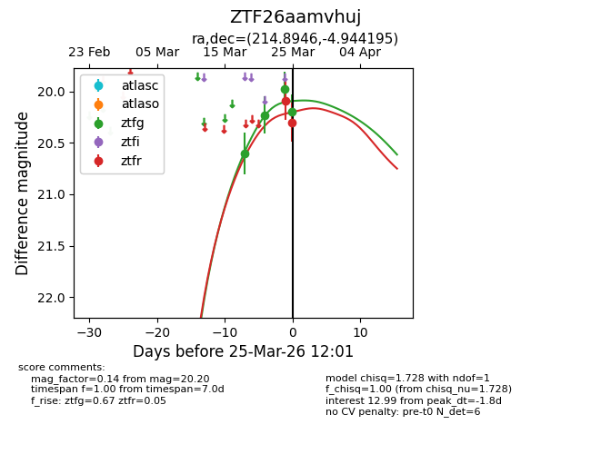
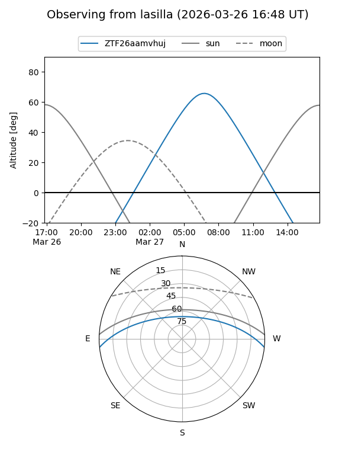
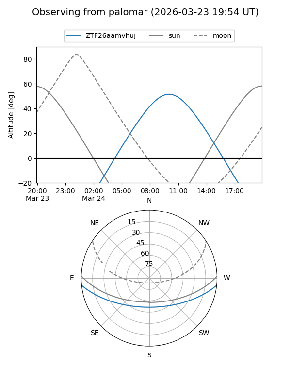
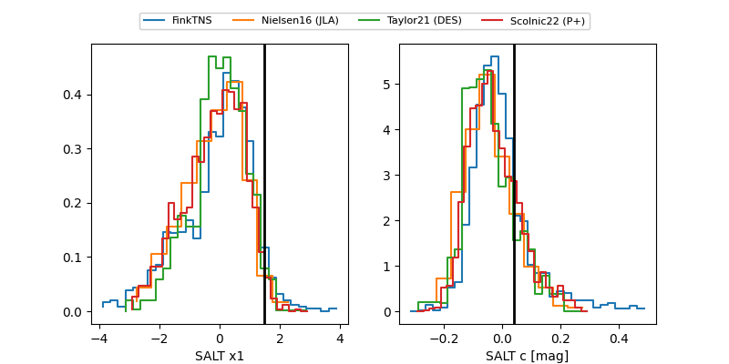

ZTF26aamvhuj
Target ZTF26aamvhuj at 2026-03-25 12:04
Aliases and brokers:
FINK: link
Lasair: link
ALeRCE: link
alt names
ZTF26aamvhuj (ztf,fink_ztf)
Coordinates:
equatorial (ra, dec) = 214.8946,-4.94419
equatorial (HMS+DMS) = 14:19:34.70,-04:56:39.10
galactic (l, b) = (339.8330,+51.50010)
Flags:
Photometry:
last ztfg=20.20, ztfr=20.30
4 ztfg, 2 ztfr detections
Lightcurve

Visibility


Additional plots
